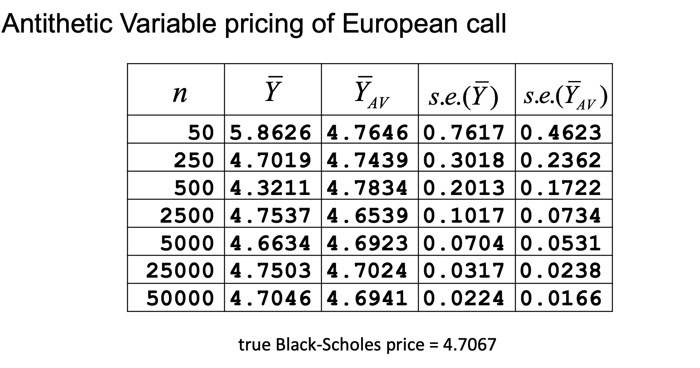
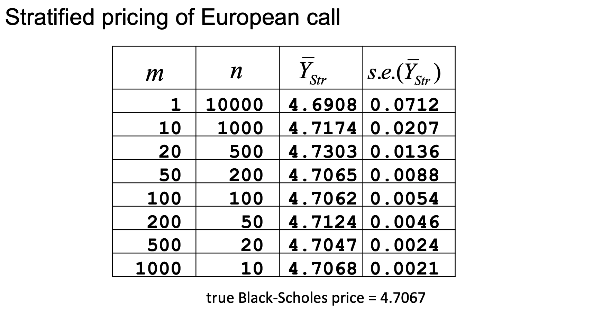
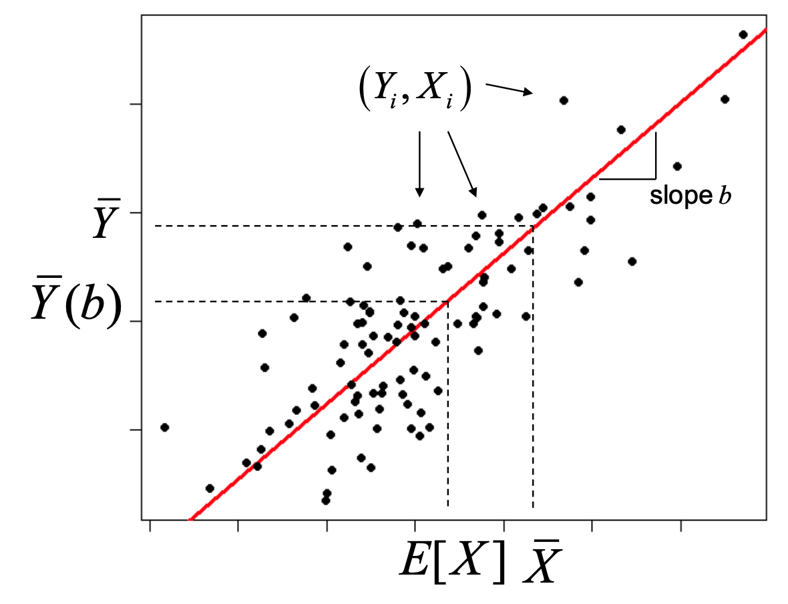
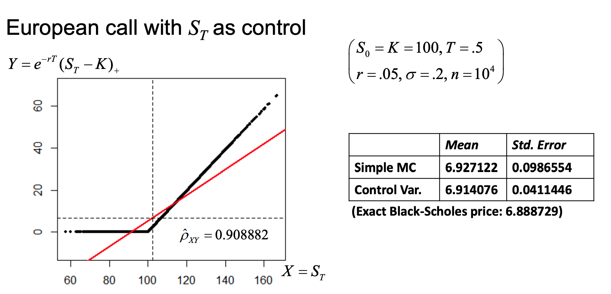
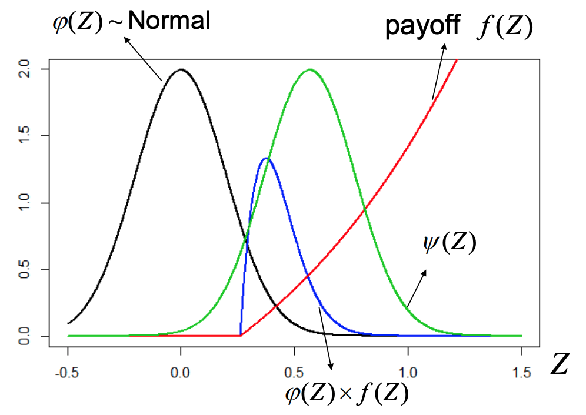
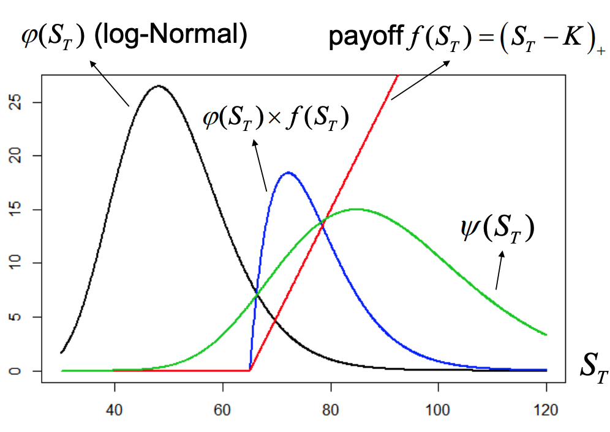

Chapter 14 Variance Reduction
Running simulation basically invokes SLLN. To sample the expectation of some RV \(Z\), we can sample a fixed \(n\) variables and the sample means will converge to \(\mathbb{E}(Z)\) at the rate \(\frac{1}{\sqrt{ n }}\sigma\) (scaled by the variance).
We can converge faster simply by increase the number of samples, or we can decrease the variance. We’ll tackle the second method.
14.1 Techniques
14.1.1 Antithetic Variables
Idea: For any Normal variate \(Z_{i}\) consider it’s negative \(-Z_{i}\). (It will follow the same distribution, if it’s centered at 0. If not, you can shift it)
- They come from the same distribution, but are dependent
- Generally, for Uniform (0,1), use \(U_{i}\) and \(1-U_{i}\)
We can calculate the discounted payoff, denoted by \(Y\) under both: \[ Y_{i} = f(Z_{i}), \tilde{Y}_{i} = \tilde{f}(-Z_{i}) \]
And then estimate price as \[ \bar{Y}_{AV} = \frac{1}{2n} \left( \sum^{n}_{i=1}Y_{i} + \sum^{n}_{i=1}\tilde{Y}_{i} \right) = \frac{1}{n}\sum^{n}_{i=1} \frac{Y_{i}+\tilde{Y}_{i}}{2} \]
- Balance payoffs of paths with “opposite” returns.
Instead of generating many pseudo random numbers, just take the antithetic (negative) variable (faster)
We can find the asymptotic distribution of antithetic variable estimator in terms of moments of \(\frac{Y_{i}+\tilde{Y}_{i}}{2}\)
\[ \begin{gathered} \bar{Y}_{AN} \text{ is sample mean of iid } RV_i:\frac{Y_{i}+\tilde{Y}_{i}}{2}\\ \text{by CLT } \bar{Y_{AN}} \sim^{approx} N\left( \mathbb{E}\left[ \frac{Y_{i}+\tilde{Y}_{i}}{2} \right], \frac{1}{n} \mathbb{V}\left[ \frac{Y_{i}+\tilde{Y}_{i}}{2} \right] \right)\\ \end{gathered} \] \[ \begin{aligned} \text{where } \mathbb{E}\left[ \frac{Y_{i}+\tilde{Y}_{i}}{2} \right] &= \frac{1}{2}\left[ \mathbb{E}(Y_{i})+ \mathbb{E}(\tilde{Y}_{i}) \right] \\ &= \frac{1}{2} 2 \mathbb{E}(Y) = \mathbb{E}\left(f(Z) \right) \\ \mathbb{V}\left[ \frac{Y_{i}+\tilde{Y}_{i}}{2} \right] &= \frac{1}{n} \frac{1}{4}\left( \mathbb{V}[Y_{i}] + \underbrace{ \mathbb{V}[\tilde{Y}_{i}] }_{ =\mathbb{V}[Y_{i}] } + 2Cov(Y_{i},\tilde{Y}_{i})\right)\\ &= \frac{1}{n} \frac{1}{4} \left( 2\mathbb{V}(Y_{i}) + 2 Cov(Y_{i}, \tilde{Y}_{i}) \right)\\ &= \frac{1}{n} \frac{1}{2} \left( \mathbb{V}(Y_{i}) + Cov(Y_{i}, \tilde{Y}_{i}) \right)\\ \end{aligned} \]
Antithetic variables may be simple and easy to generate but they won’t always help, although they will if the original and antithetic variables are negatively related. If they are unrelated/positively related, then you get worse results.
Using the antithetic variable vs Generating twice the number of samples
Proof that \(\mathbb{V}[\bar{Y}_{AV}] < \mathbb{V}\left[ \frac{1}{2n} \sum^{2n}_{i=1}Y_{i} \right]\)
\[ \begin{aligned} \mathbb{V}\left[ \frac{1}{2n} \sum^{2n}_{i=1}Y_{i} \right] &= \frac{1}{2n} \mathbb{V}(Y)\\ \mathbb{V}[\bar{Y}_{AV}] &= \frac{1}{2n}\cdot \left( \mathbb{V}(Y) + Cov(Y_{i}, \tilde{Y}_{i}) \right) \\ \left( \mathbb{V}(Y) + Cov(Y_{i}, \tilde{Y}_{i}) \right) &\leq \mathbb{V}(Y) \text{ iff } Cov(Y_{i}, \tilde{Y}_{i}) \leq 0 \end{aligned} \]
This shows that the payoff is only worthwhile if \(f(Z)\) is not an even function, as if it was, then \(\frac{Y_{i}+\tilde{Y}_{i}}{2}\) would simply be \(Y_{i}\) and that wouldn’t help us decrease varaince.

For a European call, using the antithetic variables will give us improved results because the payoff of the European call is not an even function. There is an improvement in the accuracy of prediction using antithetic variables.
Antithetic variables are a very crude way of estimation, but it’s easy to program. It ensures that you have as many numbers on one side of the distribution as the other.
14.1.2 Stratification
This is inspired by statistical sampling. Idea: Split RV domain into equi-probable strata and draw equal number of variates from within each one.
- E.g. (2 strata) draw equal number of independent positive and negative \(Z_{i}\)
Stratification ensures equal representation of each stratum in the RV domain
- Always reduces variance, but could be marginal improvements.
- It’s worth doing stratification when the target RV (payoff) changes over its domain. Like a payoff function that may be exponential.
Why don’t we always use it? It’s expensive, as you may need to calculate conditional distribution, and many details that require work to figure out. However, for the Normal, a conditional Normal is still Normal, which makes things easy in that particular case. Otherwise, it may require numerical computation and may not be worth it.
Consider \(\# m\) equi-probable Normal strata \(\left\{A_j\right\}\) \[ P\left(Z \in A_j\right)=1 / m \text { for } Z \sim N(0,1), j=1, \ldots, m \] Stratified estimator of \(Y=f(Z)\) (payoff, but in general could be any function) \[ \begin{aligned} & \bar{Y}_{S t r}=\frac{1}{m} \sum_{j=1}^m \bar{Y}^{(j)}, \text { where } \bar{Y}^{(j)}=\frac{1}{n} \sum_{i=1}^n f\left(Z_i^{(j)}\right) \\ & Z_i^{(j)} \sim^{\text {iid }} N\left(0,1 \mid Z_i^{(j)} \in A_j\right), j=1, \ldots, m \end{aligned} \] - \(\bar{Y}^{(j)}\) is estimator within each stratum \(j\)
We can verify that \(\bar{Y}_{Str}\) is an unbiased estimator of \(\mathbb{E}(f(Z))\).
\[ \begin{aligned} \mathbb{E}(\bar{Y}_{Str}) &= \mathbb{E}\left[ \frac{1}{m}\sum^{m}_{j=1}\bar{Y}^{(j)} \right] = \frac{1}{m}\sum^{m}_{j=1} \mathbb{E}[\bar{Y}^{j}]\\ &= \frac{1}{m} \sum^{m}_{j=1} \mathbb{E} \left( \frac{1}{n}\sum^{n}_{i=1} Y_{j}^{(i)} \right)\\ &= \frac{1}{m}\sum^{m}_{j=1} \frac{1}{n}\sum^{n}_{i=1}\underbrace{ \mathbb{E}\left[ Y_{i}^{(j)} \right] }_{ \mathbb{E}[Y | Z \in A_{j}] = \mathbb{E}\left[ f(Z) | Z \in A_{j} \right] }\\ &= \frac{1}{m} \sum^{m}_{j=1} \frac{1}{n}n \mathbb{E}[f(Z)|Z \in A_{j}]\\ &= \frac{1}{m} \sum^{m}_{j=1} \mathbb{E}(f(Z)|Z \in A_{j})\\ &= \sum^{m}_{j=1}\mathbb{E}\left[ f(Z) | Z \in A_{j}\right] \cdot P(A \in A_{j})\\ \text{By Law of Tot. Prob }&= \mathbb{E}(f(Z)) \cdot \mathbb{E}(Y)\\ \end{aligned} \]
We want to show that stratified sampling cannot do worse (higher variance) than simple random sampling
ie \(\mathbb{V}(\bar{Y}_{Str}) \leq \mathbb{V}(\bar{Y})\) where \(\bar{Y} = \frac{1}{nm} \sum^{nm}_{i=1}f(Z_{i})\), with \(n\) numbers per \(m\) strata
Stratification can’t always be used because it’s computationally expensive
\[ \begin{aligned} \mathbb{V}(\bar{Y}) = \mathbb{V}\left( \frac{1}{nm} \sum^{nm}_{i=1} Y_{i} \right) &= \frac{1}{nm} \mathbb{V}(Y_{i})\\ &= \frac{1}{nm} \left( \mathbb{E}[Y_{i}^{2}] \cdot [\mathbb{E}(Y_{i})]^{2} \right) \\ &= \frac{1}{nm} \left[ \mathbb{E}(f^{2}(z)) \right] - \mu^{2}\\ \end{aligned} \] \[ \begin{aligned} \mathbb{V}(\bar{Y}_{Str}) &= \mathbb{V}\left( \frac{1}{m} \sum^{m}_{j=1} \bar{Y}^{(j)} \right) \\ &= \frac{1}{m^{2}} \sum^{m}_{j=1} \mathbb{V}(\bar{Y}^{(j)})\\ &= \frac{1}{m^{2}} \sum^{m}_{j=1} \mathbb{V}\left[ \frac{1}{n} \sum^{n}_{i=1} \underbrace{ Y^{(j)} }_{ \text{iid in each sample} } \right] \\ &= \frac{1}{m^{2}n^{2}} \sum^{m}_{j=1} \sum^{n}_{i=1} \mathbb{V}\left( Y_{i}^{(j)} \right) \\ &= \frac{1}{m^{2}n^{2}} \sum^{m}_{j=1} n\mathbb{V}(Y^{(j)})\\ &= \frac{1}{m^{2}n} \sum^{m}_{j=1} \mathbb{V}(\underbrace{ Y }_{ f(z) }|z\in A_{j})\\ &= \frac{1}{m^{2}n} \sum^{m}_{j=1}\left[ \mathbb{E} \left( f^{2}(z)|z \in A_{j} \right) - \left( \mathbb{E}(f(z))|z \in A_{j} \right)^{2} \right] \\ &= \frac{1}{mn} \left\{ \overbrace{ \sum^{m}_{j=1}\mathbb{E}\left[ f^{2}(z)|z \in A_{j} \right] \cdot \underbrace{ \frac{1}{m} }_{ P(z\in A_{j}) } }^{ \text{By LTP, } \mathbb{E}[f^{2}(z)] } - \frac{1}{m} \sum^{m}_{j=1} \underbrace{ \left( \mathbb{E}(f(z)|z \in A_{j})^{2} \right) }_{ \mu_{j} } \right\}\\ &= \frac{1}{mn} \left\{ \mathbb{E}\left[ f^{2}(z) - \frac{1}{m}\sum^{m}_{j=1}\mu_{j}^{2} \right] \right\} \\ &\leq \mathbb{V}\left[ \bar{Y} \right] = \frac{1}{mn}\left\{ \mathbb{E}\left[ f^{2}(z)-\mu^{2} \right] \right\} \\ &\iff \frac{1}{m} \sum^{m}_{j=1} \mu_{j}^{2} \geq \mu^{2} \end{aligned} \]
Which is true by Jensens Inequality.
Note \(\mu = \frac{1}{m} \sum^{m}_{j=1}\mu_{j} = \sum^{m}_{j=1}\underbrace{ \mathbb{E}\left[ f(z)|z\in A_{j} \right] }_{ \mu_{j} }\underbrace{ P(A_{j}) }_{ 1/m }\)
For convex functions: \[ g(x) = x^{2}, \text{then } \mathbb{E}(g(X)) = \underbrace{ \mathbb{E}(X^{2}) }_{ \frac{1}{m}\sum^{m}_{j=1}\mu_{j}^{2} } \geq \underbrace{ \left( \mathbb{E}(X) \right)^{2} }_{ \left( \frac{1}{m}\sum^{m}_{j=1}\mu_{j} \right)^{2} = \mu^{2} } \]
Because we’re subtracting a larger value in the variance, then we get a smaller variance. If we have a payoff that has lots of jumps/large values, then this would give us lots of benefit.

The more strata used, the bigger the benefit. This may be known as quasi Monte Carlo, but in the multivariate case it becomes a large pain.
14.1.3 Control Variates
Comes from regression
To estimate \(\mathbb{E}(Y) = \mathbb{E}[f(z)]\) using MC, we generate iid \(Z_{i}\) and use
\[ \bar{Y} = \sum^{n}_{i=1} \frac{Y_{i}}{n} = \sum^{n}_{i=1} \left( \frac{f(Z_{i})}{n} \right) \]
For our purposes, \(f(\cdot)\) is the option’s discounted payoff
We assume there is another option with payoff \(g(\cdot)\) whose price we already know \(\mathbb{E}(X) = \mathbb{E}(g(Z))\)
Idea: Use MC with same variates to estimate both \(\mathbb{E}(Y)\) and \(\mathbb{E}(X)\), but adjust estimate \(\bar{Y}\) to take into account the error of estimate \(\bar{X}\)
- E.g., if \(\bar{X}\) underestimates \(\mathbb{E}[X]\) then we can adjust \(\bar{Y}\) upward because it most likely also underestimates \(\mathbb{E}(Y)\).
For our purposes, we’ll focus on linear adjustments.
14.1.3.1 Example
Adjust \(\bar{Y}\) for estimation error \(\bar{X}-\mathbb{E}(X)\) linearly, as \[ \bar{Y}(b) = \bar{Y}-b(\bar{X}-\mathbb{E}(X)) \]
No matter what value of \(b\) we choose, the estimator will be unbiased (even though it may inefficient)
We will show that this is an unbiased estimator.
\[ \begin{aligned} \mathbb{E}(\bar{Y}(b)) &= \mathbb{E}[\bar{Y}-b(\bar{X}-\mathbb{E}(X))]\\ &= \underbrace{ \mathbb{E}(\bar{Y}) }_{ \mathbb{E}(Y) } - b(\underbrace{ \mathbb{E}(\bar{X}) }_{ \mathbb{E}(X) }-\mathbb{E}(X))\\ &= \mathbb{E}(Y) - b\cdot(\mathbb{E}(X)-\mathbb{E}(X)) \end{aligned} \]
On average the adjustment will always be 0, but for certain choices of \(b\), we can make the estimator much more efficient. We find \(b\) using regression on the random variables of \(Y,X\) that we’ve simulated.
We can also find the variance of \(\bar{Y}(b)\)
\[ \begin{aligned} \mathbb{V}[\bar{Y}(b)] &= \mathbb{V}[\bar{Y}-b(\bar{X}-\mathbb{E}(X))] = \mathbb{V}[\bar{Y}-b\bar{X}]\\ &= \mathbb{V}(\bar{Y}) + b^{2}\mathbb{V}(\bar{X})-2bCov(\bar{Y},\bar{X})\\ &= \frac{1}{n}\mathbb{V}(Y)+b^{2} \frac{1}{n}\mathbb{V}(X) - 2bCov\left( \frac{1}{n}\sum^{n}_{i=1}\underbrace{ f(z_{i}) }_{ Y_{i} },\ \ \frac{1}{n}\sum^{n}_{i=1}\underbrace{ g(z_{i}) }_{ X_{i} } \right)\\ &= \frac{1}{n}\underbrace{ \mathbb{V}(Y) }_{ \sigma^{2}_{y} }+b^{2}\frac{1}{n}\underbrace{ \mathbb{V}(X) }_{ \sigma^{2}_{x} }-2b \frac{1}{n^{2}}nCov(f(Z)), g(Z))\\ &= \frac{1}{n}\left[ \sigma^{2}_{y}+b^{2}\sigma^{2}_{x}-2b \sigma_{xy}\right] \end{aligned} \]
We can also show that the optimal value of \(b\) is \(b^{\star}= \frac{Cov(X,Y)}{Var[X]}\) which is the regression slope coefficient
\[ \begin{aligned} \frac{ \partial }{ \partial b } \mathbb{V}(\bar{Y}(b)) = 0 \implies& \frac{ \partial }{ \partial b } \left( \frac{1}{n} [\sigma^{2}_{y}+b^{2}\sigma^{2}_{x}-2b\sigma_{xy}] \right) = 0\\ b\sigma^{2}_{x}-\sigma_{xy}&= 0\\ \implies& b = \frac{\sigma_{xy}}{\sigma_{x}^{2}} = \frac{Cov(X,Y)}{Var(X)} = \left( \frac{\sigma_{xy}\sigma_{x}\sigma_{y}}{\sigma_{x}^{2}} = \sigma_{xy} \frac{\sigma_{y}}{\sigma_{x}} \right) \end{aligned} \]
We want the expected val of \(Y\), which we can calculate by finding the above.
In practice, don’t know \(\operatorname{Cov}[X, Y], \operatorname{Var}[X]\) so estimate \(b^*\) using MC sample
\[ \hat{b}=\frac{\sum_{i=1}^n\left(X_i-\bar{X}\right)\left(Y_i-\bar{Y}\right)}{\sum_{i=1}^n\left(X_i-\bar{X}\right)^2} \]

We want to find \(\mathbb{E}(Y)\) with the knowledge of what \(\mathbb{E}(X)\) is. We can then estimate the correlation/slope.
Furthermore, we now show that the optimal variance is \(Var(\bar{Y}(b^{\star})=Var[\bar{Y}](1-\rho^{2}_{XY})\)
\[ \begin{aligned} \mathbb{V}[\bar{Y}(b^{\star})] &= \frac{1}{n} (\sigma_{y}^{2}-b^{\star 2}\sigma_{x}^{2}-2b^{\star}\sigma_{XY})\\ &= \frac{1}{n} \left( \sigma_{y}^{2}+\left( \rho_{XY} \frac{\sigma_{Y}}{\sigma_{X}} \right) \sigma_{x}\sigma_{Y}\rho_{XY} \right) \\ &= \frac{1}{n} \left( \sigma_{Y}^{2}+\rho_{XY}^{2}\sigma_{y}^{2} - 2\rho^{2}_{XY}\sigma_{Y}^{2} \right) \\ &= \frac{1}{n}\sigma_{Y}^{2}(1-\rho_{XY}^{2})\\ &= \mathbb{V}(\bar{Y})\cdot(1-\rho^{2}_{XY}) \end{aligned} \] - In practice, use sample estimates of \(\operatorname{Var}[\bar{Y}], \rho_{X Y}\) Good control variates have high absolute correlation with option payoff (high \(\left.\rho_{X Y}\right)\) !
We can apply this to price a European option
14.1.3.2 Example
Price a European option using final asset price (\(S_{T}\)) as control assuming GBM w/ \(r,\sigma\). We know:
- \(X=S_{T}=g(Z)=S_{0}\exp \left\{ \left( r-\frac{\sigma^{2}}{2} \right)T+\sigma \sqrt{ T }\cdot Z \right\}\)
- \(\mathbb{E}(X) = \mathbb{E}(S_{T}) = S_{0}e^{rT}\)
We guess the correlation of control with the following:
- (Deep) In-the-money call (most likely to be exercised): \(\rho_{XY} \approx 1\)
- \(Cov((S_{T}-K)_{+}, S_{T})\) which is most likely positively correlated
- Out-of-the-money call: \(\rho_{XY}\approx 0\)
- \(Cov(0, S_{T}) \approx 0\)
- In the money put: \(\rho_{XY} \approx -1\)
- Out of the money put: \(\rho_{XY} \approx 0\)

This produced a closer estimate than simple MC, but it is much more complex to calculate (almost double the computation, as it uses twice as many samples). If we doubled the samples for simple MC, then the SE would drop by a factor of \(\frac{1}{\sqrt{ n }}\)
14.1.4 Importance Sampling
Idea: Attempt to reduce variance by changing the distribution (probability measure) from which paths (random variates) are generated.
- Change measure to give more weight to important outcomes, thereby increasing sample efficiency
- E.g. for European call, put more weight to paths with positive payoff i.e., for which we exercise)
Performance of importance sampling relies heavily on equivalent measure being used.
We want to estimate \(a=\mathbb{E}_{\phi}[f(Z)]=\int _{z} f(z)\phi(z) \, dz\) where \(\phi(z)\) is the pdf of \(Z\) (Normal in this case)
- In the Simple MC: Generate sample \(Z_{i} \sim^{iid} \phi, \quad i=1,\dots,n\) and use \(\hat{\alpha}=\frac{\sum^{n}_{i=1}f(Z_{i})}{n}\) which by CLT and LLN it will converge to \(\mathbb{E}_{\phi}(f(Z))\)
Assuming you ahve a same \(Z'_{i} \sim^{iid} \psi, \quad i = 1,\dots,n\) from a new pdf \(\psi\), you can still estimate \(\alpha\) as follows:
\[ \begin{gathered} \alpha = \int _{z} f(z) \phi(z) \, dz = \int _{z} f(z) \frac{\phi(z)}{\psi(z)} \psi(z) \, dz = \mathbb{E}_{z}\left[ f(Z') \frac{\phi(Z')}{\psi(Z')} \right]\\ \implies\hat{\alpha} = \frac{1}{n} \sum^{n}_{i=1} f(Z'_{i}) \frac{\phi(Z')}{\psi(Z')} \end{gathered} \]
Also used in some cases where you can’t simulate efficiently from \(\phi(Z)\), but you have a way to calculate this density. You can simulate from a distribution that has a cdf \(\psi(Z)\) instead, and has a method of simulating variates from.
There is a way to simulate from a Normal distribution (which doesn’t have a CDF) other than this, he did not mention exactly what, nor should it be that important.
14.1.4.1 Importance Sampling is unbiased
Proof that \(\hat{\alpha'}\) is unbiased provided the simple MC estimate \(\hat{\alpha}\) is unbiased.
\[ \begin{aligned} \mathbb{E}_{\psi}[\hat{\alpha'}] &= \mathbb{E}_{\psi} \left[ \frac{1}{n} \sum f(Z_{i}') \frac{\phi(Z'_{i})}{\psi(Z'_{i})} \right]\\ &= \frac{1}{n} \sum_{i=1}^{n} \mathbb{E}_{\psi} \left[ f(Z'_{i}) \frac{\phi(Z'_{i})}{\psi(Z'_{i})} \right]\\ &= \int _{-\infty}^{\infty} \underbrace{ f(z') \frac{\phi(z')}{\psi(z')} }_{ value } \underbrace{ \psi(z') }_{ prob } \, dz'\\ &= \int ^{\infty}_{-\infty} f(z') \phi(z') \, dz'\\ &= \mathbb{E}_{\phi} \left[ f(z) \right] \\ &= \alpha \end{aligned} \]
But when is this efficient (better than simple MC)?
When the variance of \(\hat{\alpha}'\) is lower
\[ \begin{aligned} \mathbb{V}_{\psi}(\hat{\alpha}') &= \mathbb{V}_{\psi} \left[ \frac{1}{n} \sum^{n}_{i=1} f(z') \frac{\phi(z')}{\psi(z')} \right] \\ &= \frac{1}{n} \mathbb{V} \left[ f(z'_{i}) \frac{\phi(z'_{i})}{\psi(z'_{i})} \right] \\ &= \frac{1}{n} \left\{ \mathbb{E}_{\psi} \left[ \left( f(z') \frac{\phi(z')}{\psi(z')} \right)^{2} \right] - \left( \mathbb{E}_{\psi} \left[ f(z') \frac{\phi(z')}{\psi(z')} \right] \right)^{2} \right\} \end{aligned} \]
Now we show that this variance is lower than \(\mathbb{V}_{\phi}(\hat{\alpha})\) iff \(\mathbb{E}_{\phi} \left[ f^{2}(Z) \frac{\phi(Z)}{\psi(Z)} \right] \leq \mathbb{E}_{\phi}\left[ f^{2}(Z) \right]\)
\[ \begin{aligned} \mathbb{V}_{\psi}\left[ \hat{\alpha}' \right] \leq \mathbb{V}_{\phi}[\hat{\alpha}] &\iff \frac{1}{n} \left\{ \mathbb{E}_{\psi}\left[ \left( f(z') \frac{\phi(z')}{\psi(z')} \right)^{2} \right] - \alpha^{2} \right\} \leq \frac{1}{n} \left\{ \mathbb{E}_{\phi} \left[ f^{2}(z) \right] -\alpha^{2} \right\} \\ &\iff \mathbb{E}_{\psi}\left[ f^{2}(z') \frac{\phi^{2}(z')}{\psi^{2}(z')} \right] \leq \mathbb{E}_{\phi} \left[ f^{2}(z) \right]\\ &\iff \int f^{2}(z') \frac{\phi^{2}(z')}{\psi^{2}(z')} \psi(z') \, dz' = \int f^{2}(z') \frac{\phi(z')}{\psi(z')} \phi(z') \, dz'\\ &\quad \quad \quad = \mathbb{E}_{\phi}\left[ f^{2}(z) \frac{\phi(z)}{\psi(z)} \right] \end{aligned} \]
We can even show that \(\mathbb{V}_{\psi}[\hat{\alpha}] = 0\) iff \(\psi(z) \propto f(z)\psi(z)\) for positive \(f\).
Then \(\psi(z) = \frac{1}{c} f(z)\phi(z) \implies \int \psi(z) \, dz = 1\) \(\implies \int \frac{1}{c} f(z)\phi(z) \, dz = 1 \implies \int f(z)\phi(z) \, dz = \mathbb{E}_{\phi}[f(Z)]\)
We need the price of the option to be finite, or the integral will not be finite. If the \(\phi\) idstirbution is completely proportional to the functions, then the normalizing value is exactly what we’re looking for. This is an extreme case, although the overall idea is that we want \(\psi\) to be as similar as possible
\[ \begin{aligned} \mathbb{V}_{\psi} [\hat{\alpha}'] &= \frac{1}{n} \left\{ \mathbb{E}_{\psi} \left[ \left( f(z') \frac{\phi(z')}{\psi(z')} \right)^{2} \right] -\alpha^{2} \right\} \\ &= \frac{1}{n} \left\{ \mathbb{E}_{\psi} \left[ \left( \frac{f(z')\phi(z')}{\frac{1}{c} f(z')\phi(z')} \right)^{2} \right] -\alpha^{2} \right\}\\ &= \frac{1}{n} \left\{ \underbrace{ \mathbb{E}_{\psi} \left[ c^{2}\right] }_{ \alpha^{2} } -\alpha^{2} \right\}\\ &= \frac{1}{n} \left( \alpha^{2} -\alpha^{2}\right) =0\\ \end{aligned} \]
Importance sampling works best when new pdf \(\psi\) “resembles” payoff \(\times\) (original pdf) \(f \times \varphi\)
14.1.4.2 Extending to paths
Importance sampling can be extended to multiple random variates per path - E.g. path-dependent option, with payoff \(f\left(Z_1, \ldots, Z_m\right)\) a function of \(\# m\) variates forming discretized path \[ E_{\varphi}\left[f\left(Z_1, \ldots, Z_m\right)\right]=E_\psi\left[f\left(Z_1^{\prime}, \ldots, Z_m^{\prime}\right) \frac{\varphi\left(Z_1^{\prime}, \ldots, Z_m^{\prime}\right)}{\psi\left(Z_1^{\prime}, \ldots, Z_m^{\prime}\right)}\right] \] - If in addition, \(Z_j \sim^{i i d} \varphi_j \& Z_j^{\prime} \sim^{i i d} \psi_j\), then \[ E_{\varphi}\left[f\left(Z_1, \ldots, Z_m\right)\right]=E_\psi\left[f\left(Z_1^{\prime}, \ldots, Z_m^{\prime}\right) \prod_{j=1}^m \frac{\varphi_j\left(Z_j^{\prime}\right)}{\psi_j\left(Z_j^{\prime}\right)}\right] \]
14.1.5 Ex. Deep OOTM European Call
\(S_{0} = 50, K = 65\) Find the price of the option using simple MC
Generate final prices from the log Normal distribution
- With simple MC, generate final prices as \[ S_T=S_0 e^Z, \text { where } Z \sim \varphi=N\left(\left(r-\frac{\sigma^2}{2}\right) T, \sigma^2 T\right) \] What would be a good candidate for \(\psi\) ? \[ Z^{\prime} \sim \psi=N\left(\log \left(\frac{90}{50}\right)-\frac{\sigma^2}{2} T, \sigma^2 T\right) \text { or } N\left(\log \left(\frac{30}{50}\right)-\frac{\sigma^2}{2} T, \sigma^2 T\right) \]
Only diff is the mean, but the first distrbution has a higher mean, which is what we want to simluate from as we want the final price to be closer to higher values (65)


Most of the values simulated in the black distribution (RN measure) you would get 0 payoff, except in the tail. We want to shift the distribution so most of the simulations give us a positive pay off, such as in the green distribution. This will do much better in simulation. The blue distribution is the payoff x RN measure that we ideally want to simulate (but we can’t actually get since \(\phi\) is hard to get?)